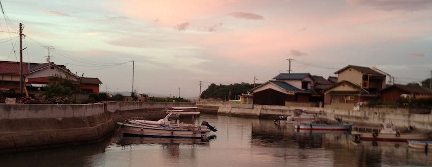

- 


Mizutamaya will reopen on April 19, 2014.
About
Mizutamaya opened in 2013, in a 50-year-old house just two-minute walk from the Ieura Port in Teshima, an island about 20 kilometers in circumference and with a population under 1,000, surrounded by beautiful Seto Inland Sea.
It will be a real pleasure for us to help visitors feel the gentle flow of time, warmth of people and fresh sea breeze on this small island.
News
Tweets by @mizutama_yaBike Rental
In a small island like Teshima, bicycle is a perfect way to move around. Feel the sunlight, smell the sea, listen to birds chirping and enjoy cycling in beautiful sceneries.
Please check our updates on twitter(@mizutama-ya) or on our website.
Type

Electric bikes
Electric power assists guarantee you an easy and fun ride. With on-board 13.2Ah battery, you can enjoy cycling on this hilly island without worrying about running out of batteries.

Three-speed bikes
Tougher on hills but lower in price. Pop colors will enhance your ride.
Rates
We take reservations. Please call us. (No reservation fee charged.)
For those staying a night in Teshima, bikes can be kept overnight and used on consecutive days by paying the overnight fee in addition to the regular rental fee.
(Please return the bike by 8:00-8:30 a.m. next day.)
Free left luggage those using our bike rental service. (We do not take any fragile or valuable articles.)
| Electric bikes | Three-speed bikes | |
|---|---|---|
| Half-day (8a.m.-noon / noon-5p.m.) |
1,200yen | 500yen |
| One-day (8a.m.-5p.m.) |
1,500yen | 700yen |
| Overnight (5 p.m.-8:30 a.m. next day) |
500yen | 300yen |
- Extra hour (5:00 p.m.-6:00 p.m.) +200 yen
- Left luggage 300 yen per person (free for those using bike rental service)
Notes:
- 1. In case of a flat tire or any other failures and abnormalities, please get off immediately and call Mizutamaya. An actual expense will be charged if a tire or a tube is damaged due to continuing riding after getting a flat tire.
- 2. Please note that you cycle on roads that residents of Teshima use for their everyday lives. By following the Japanese traffic regulations, please keep to the left. Please refrain from speeding for your safety and park only in designated areas.
- 3. When leaving the bike, please make sure to lock it. If the bike is stolen or lost due to a failure of lock, we might ask you to pay for it.
- 4. The bike is under TS mark insurance, however, the rider takes full responsibility for any injuries and accidents not covered by the insurance. Please ride safely. We assume no responsibility whatsoever for any injuries and accidents during the use of the bike.
- 5. Please handle the bike gently. We will charge you an actual expense if you cause any damage on the bike.
- 6. Please return the bike to Mizutamay during our business hours (8 a.m.-5 p.m.). If you are going to be late, please call and let us know (additional fee charged for overtime).
- 7. To change or cancel the reservation, please call Mizutamaya by at least one day prior to the original reservation date. Cancellation on the day incurs full payment. Although cancellation fee won’t be charged in case of a bad weather, please call Mizutamaya to cancel the reservation.
Cafe
Please come to cafe Mizutamaya where hot/ cold drinks and snacks waiting for you.
Hot drinks
- coffee：350yen
- cafe au lait：450yen
- tea：350yen
- herbal tea：350yen
Cold drinks
- Iced coffee：400yen
- Iced cafe au lait：450yen
- Iced tea：400yen
- Iced herbal tea：350yen
- Fruit enzyme drinks：400yen
Sweets
- Lemon cake：350yen
- Soy milk yogurt with lemon sauce：300yen
- Today's special：250-400yen
Gallery
Two Japanese-style rooms are open to public as a gallery.
Gallery can be rented from one week. Please ask for rates and details.
Information for exhibitions will be posted on Facebook.
Event
Information for events will be posted on Facebook.
Access
Mizutamaya
2189 Teshima-Ieura, Tonosho-cho
Shozu-gun, Kagawa
Japan
761-4661
TEL: +81-(0)90-9230-3443
Mail: teshima.mizutamaya@gmail.com
Twitter: @mizutama-ya
Getting here
From the ferry, walk toward the land, your back to the sea (you will find café Seaside Onishi on your left and eatery Teshima Syokudo on your right),
Across the street and go straight (olive trees on both sides),
You will find Mizutamaya on your right.
Hours
- Bike rental 8 a.m.-5 p.m.
- Cafe and Gallery 11 a.m.-6 p.m.
- Closed on Tuesdays